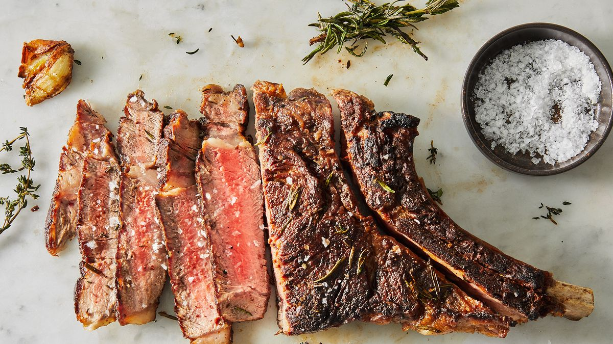

Receipe for Steak

Description
This is a guide for cooking a perfecct steak using a reverse-searing method.
Ingredients
- Steak
- Salt and peppers
- Garlics
- Butter
- Thyme
Steps
- Marinate steak with salt and pepper and put it in a fridge for 4 hours.
- Put steak in the oven, until it reaches internal temperture of 115F.
- Once internal temperture reach 115F, cook the steak on an iron cast.
- Cook each side for about a minute. Add butter, thyme, and garlic.